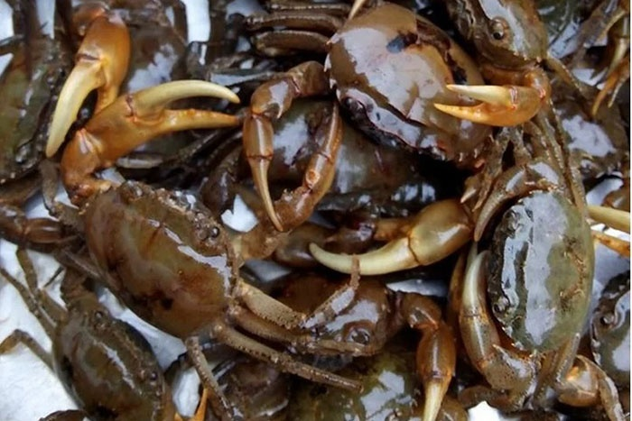
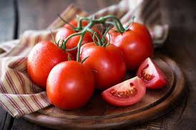
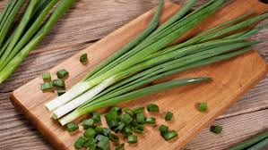
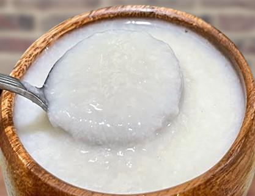
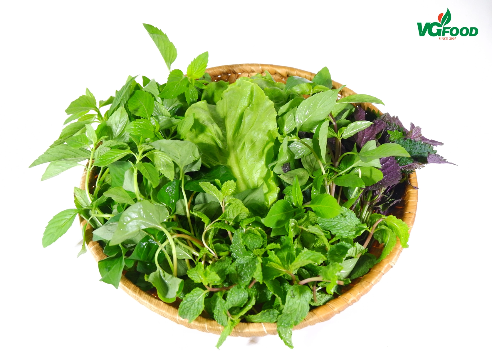

Nguyên Liệu

Cua đồng
300g

Cà chua
2 quả

Hành lá
50g

Mẻ
50g

Rau thơm
100g

Gia vị
Nước mắm, muối, đường
Cách Chế Biến
- Rửa sạch cua, xay nhuyễn, lọc lấy nước cua.
- Phi thơm hành, xào cà chua và mẻ, thêm gia vị vừa ăn.
- Đun nước cua đến khi riêu nổi, sau đó cho cà chua đã xào vào.
- Nêm gia vị, cho hành lá và rau thơm vào trước khi tắt bếp.
- Thưởng thức với bún hoặc cơm.